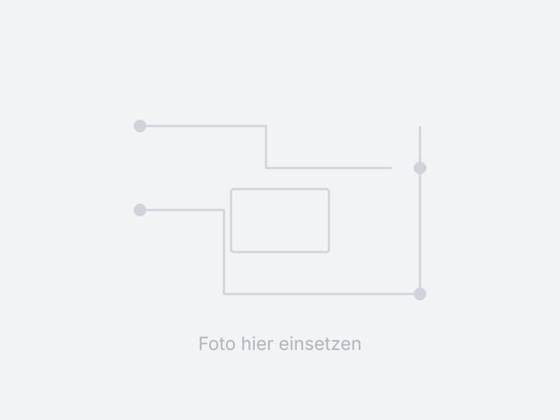

4S LiFePO4 BMS
A single sentence summarizing the project without requiring scrolling. For example: Cell monitoring and safety cutoff for a 12 V battery pack in a camper van, rated for 60 A continuous current.

Motivation
What was the core problem? Why build an in-house solution instead of buying off-the-shelf? Two to four concise sentences are sufficient.
Circuit Design
Focus on key architecture decisions rather than enumerating every schematic line. Example: Why a shunt resistor was chosen over a Hall-effect sensor, gate driver topology design, and the isolation interface between power and logic stages.
PCB Layout
Layer stackup, copper weight, critical trace widths, and thermal management. If revision A had a design flaw, document what was updated in revision B here.
Firmware
High-level architecture, RTOS vs. bare-metal implementation, cell voltage sampling and filtering algorithms, and short-circuit protection execution.
Test Results
Engineering metrics and empirical data:
- Cell voltage measurement error: ±3 mV across 2.5–3.8 V
- Quiescent current: 42 µA in sleep mode
- Short-circuit response time: 180 µs
- MOSFET temperature at 60 A: 64 °C after 20 min
Lessons Learned & Next Steps
An honest reflection on design tradeoffs and open improvement areas. Demonstrates thorough technical evaluation better than claiming first-pass perfection.
Gallery